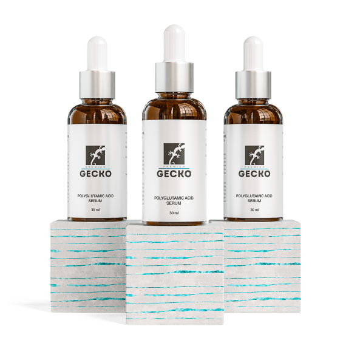

POLYGLUTAMIC ACID SERUM
Лёгкая сыворотка на водной основе. Прекрасное дополнение к базовому домашнему уходу. Быстро впитывается, не утяжеляет.
Состав:
Aqua, Polyglutamic Acid,
Glycerin, Urea, Niacinamide,
Phenoxyethanol,
Ethylhexylglycerin, Hyaluronic
Acid, Carbomer, Lactic Acid.
Подробнее про активные компоненты:
 @@include('show_more_popup.html')
@@include('show_more_popup.html')